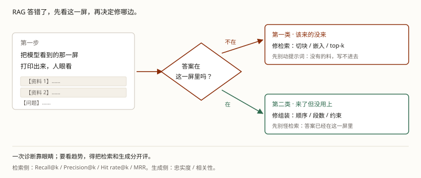

同一句"请五天假要走什么流程"，系统答错了。第一反应是换个更大的模型。
换完可能更糟。因为 RAG 的错只有两类，解法正好相反：一类是资料压根没检索到，一类是资料检索到了、模型没用上。前者要修"怎么找"，后者要修"怎么用"。
学完这课，你能拿一屏提示词，一眼分清是哪一类，知道先查哪一步，也能用一套小评估集，量出改动前后到底有没有变好。
先看答案在不在那一屏里：不在，修怎么找；在，修怎么用。
一次诊断，把提示词打出来看就够；要看趋势得靠指标：检索侧四个数，生成侧忠实度和相关性。
RAG 出问题，症状都落在最后那句回答上，病灶却可能在前面的任何一步。把所有错都归给模型，等于每坏一次换一次发动机，修没修好全看运气。
先分两类：
第一类回去修切块、嵌入、取几段，第二类修顺序、段数、约束和拒答。混着调，最后连自己改了什么都记不清。
分开它们只要一个动作：把模型会看到的那一屏提示词打印出来，人眼看一遍。答案在不在里面？

症状很直接：答案根本不在提示词里。模型手上没料，只能编，或者老实说"资料里没有"。
常见原因有四个：切块把答案切断了；问法和文档用词对不上；top-k 取得太小；换了嵌入模型却没重算旧向量。
脚本里的场景 A 就是前两个原因叠在一起。问题是"我入职四年，年假有几天"，资料库里明明写着"满三年 10 天，满五年 15 天"，检索却只取了 1 段；而且拿"入职四年"去撞原文，撞上的是请假流程那段。
模型看到的那一屏只有请假流程，没有年假天数。提示词再怎么要求它"认真回答"，也答不出那个数。资料里没有的，它写不出来。
要改的地方都在检索侧：把块切对、把问法改对、把 top-k 放宽、换模型后整库重算。第 6 课拆过 Anthropic 那组 5.7% → 1.9% 的数字：三步改进全在检索侧，没有一步是换更强的模型。
症状更隐蔽：答案就在提示词里，模型还是答错、答偏，或者挑了另一段。
脚本里的场景 B 是典型。问题是"请三天假要走什么流程"，检索给了 8 段，正确的那两段都在里面，却排在中间，前后压着办公用品、会议室、门禁卡。
答案在，但被埋住了。第 8 课量过这件事：相关信息放中间时，模型用上的机会明显下降；放开头或结尾才好使。段数太多、几段互相矛盾、提示词没要求"只依据资料"，也会让模型绕开那段。
要改的是组装：把最相关的放前面，把段数压到够用，给每段标上来源和版本，写清"只依据资料回答"和"没有就说没有"。第 8 课讲的五个决定，就是这一类的修法。
这里最容易犯的错，是回头继续调检索。答案已经在提示词里，再把 top-k 调大，只会塞进更多噪音，把问题弄得更糟。
把症状、类别和第一步对在一起，排查时就不容易乱。
| 你看到的症状 | 是哪一类 | 先查哪一步 |
|---|---|---|
| 答案压根没给 | 该来的没来 | 切块 / 变向量 / 取几段 |
| 答案给了却没用 | 来了但没用上 | 顺序 / 段数 / 约束 |
| 答得模棱两可 | 两种都有可能 | 先把提示词打出来看一眼 |
表只负责定位。定位完，一次只改一类：要么修检索，要么修组装。两边一起动，下次再坏还是分不清是谁的责任。
打印提示词能救一次火，但量不了趋势。你改了切块、换了嵌入模型、调了 top-k，哪一次真的更好？只看几条个例，很容易被最近一次翻车带偏。
要回答"改完有没有变好"，得用同一套问题、同一套指标，在改动前后各跑一遍。这就是评测——RAG 的回归测试，不是学术仪式。
评测的第一条规矩：检索和生成分开评。只看最终答案，你只知道"坏了"，不知道坏在哪一段。Anyscale 的 RAG 评测文档把理由写得很直白：分开评才能定位瓶颈、正确归因，弄清楚是找错了资料，还是把对的资料用错了。
第 8 课的引用核对是单条答案的出处检查；这一课要的是整批问题的趋势。两件事不冲突，但别拿单条核对代替整批评测。
检索侧要先有一份标注：每个问题，人工标出"该命中哪几段"。二元判断就够，不用打相关性分数。有了它，四个数才有意义。
| 指标 | 它问什么 | 低了意味着 |
|---|---|---|
| Recall@k | 该命中的段，我拿到了多少？ | 漏了；缺了就一定答不出 |
| Precision@k | 拿到的 k 段里，有用的占多少？ | 噪音多；答案容易被淹 |
| Hit rate@k | top-k 里至少有一段对的吗？ | 最粗的及格线，看不出漏了多少 |
| MRR | 第一段对的排在第几？ | 排序不好；正确的那段不够靠前 |
四个数经常互相打架，怎么打架本身就是信息。脚本用 10 个问题的小标注集跑出来是这样：
k Recall@k Hit rate@k Precision@k
1 0.70 0.80 0.80
2 0.80 0.80 0.50
3 0.90 0.90 0.37
5 1.00 1.00 0.24
MRR = 0.86k 从 1 调到 5，Recall 涨到满分，Precision 却从 0.80 掉到 0.24。多塞进来的三段没有用，等于亲手制造了"来了但没用上"。
所以别只报一个数。至少同时看 Recall@k（漏没漏）和 MRR（排得好不好）；怕噪音的场景再加一个 Precision。只报 Hit rate 会骗自己：它只回答"至少中了一个没有"，不回答"漏了多少"。
起步不需要几百条。先拿几十条真实问题，覆盖常见问法，认真标"该命中哪几段"。质量比数量重要：十条有代表性的题，胜过一百条自己编的泛化题。
检索侧量"找没找到"，生成侧量"答得怎么样"。最要紧的两个数是忠实度和相关性。
忠实度（Faithfulness）问的是：答案里的每一句断言，能不能在检索到的资料里找到依据。RAGAS 的算法是先把回答拆成若干断言，再逐条核对，最后算比例：
忠实度 = 资料能支持的断言数 ÷ 答案里的断言总数RAGAS 文档里有个例子：资料说爱因斯坦生于 1879 年 3 月 14 日，回答却写成 3 月 20 日。回答拆成两句，"生于德国"有依据，"生于 3 月 20 日"没有，忠实度就是 1 ÷ 2 ＝ 0.5。
忠实度低，说明模型在编，或者把资料里没有的数字、日期、条款加了进去。它不问答案对不对，只问有没有依据。答得对、资料里却没有，也算低忠实度。
相关性（Answer Relevancy）问的是另一件事：答案有没有正面回答用户的问题。Anyscale 的文档举了个例子：问"法国首都在哪"，答"法国位于西欧"，这句话可能完全忠实，但答非所问。
两个数要一起看。忠实度高、相关性低，可能是模型老实说"资料里没有"，也可能是绕开了问题；相关性高、忠实度低，说明答得像，但在编。两个都过了，答案才谈得上可信。
红线要不要设？要，但别照抄别人的数字。制度、法务、医疗这类场景可以定得很紧，资料整理、头脑风暴这类可以松一些。红线是你自己的产品决定，不是通用常数。
忠实度和相关性都要判断"这句话有没有依据""有没有回答问题"。逐条人工看最准，但跑一次评测就要几百条，人工扛不住。常见做法是让一个强模型当判官，按写好的标准打分，这叫 LLM-as-Judge。
它靠得住吗？Zheng 等人在 MT-Bench 和 Chatbot Arena 上做过对照：像 GPT-4 这样的强判官，和人类偏好的 agreement 超过 80%，跟人与人之间的一致程度差不多。所以它确实能当一条可扩展的尺子。
但它有系统性偏差。同一篇论文列了三条：位置偏差（更偏爱排在前面的答案）、啰嗦偏差（更偏爱更长的回答）、自我增强（更偏爱自己或同族模型的输出）；此外，判官的推理能力也有限。Anyscale 的文档还提醒，不同判官模型给出的分不一致。
所以判官不能拿来就用，用之前得校准。四条做法：
判官是回归测试里的工具，不是最终答案。它适合大批量筛查、看趋势；低分和边界样本，仍然要人看。Anyscale 的建议也是混合：判官做广覆盖，人做失败样本和高风险场景的复核。
评测集不是随便攒一百个问题。至少要覆盖三种题型，否则量出来的分数会偏。
单跳题：答案在一段资料里。比如"年假每年多少天？"它测最基本的检索和回答，是及格线。
多跳题：答案要两三段资料拼起来。比如"我 2021 年 3 月入职，今年能休几天，没休完能留到明年吗？"它测覆盖面和拼装能力；只放一段，答案就缺一块。RAGAS 的测试集生成文档也把查询分成单跳和多跳两类，理由正是它们需要的上下文不同。
否定题：资料里根本没有答案。比如"公司有班车吗？"它测的是拒答：系统会不会老实说"资料里没有"，还是拿一段相似的文字硬凑。第 8 课讲过，拒答是两道闸门；否定题就是量这道闸门的。
三类题的比例看场景，但一种都不能缺。全是单跳题，系统可能很会查一条规则，却不会拼多段；全是有答案的题，系统可能永远在编，你却在相关性上给它高分。
否定题的检索指标要单独处理：它没有"该命中的段"，Recall 和 MRR 没有定义，别硬塞进平均值。它该看的是有没有正确拒答，以及拒答的话说得清不清楚。
把上面的东西串起来，一个能跑的最小流程只有六步：
一次只改一个变量。先看检索分有没有变，再看生成分有没有变；两边一起动，分数涨了也不知道是谁的功劳。第 10 课会把"攒一套题、跑一组配置、得出结论"完整走一遍。
这一课有两个脚本，都不调模型。第一个打印两屏提示词，让你看两类翻车长什么样；第二个用 10 个问题的小标注集，把检索侧四个数算出来。
python exercises/rag/0009-two-failure-modes.py
python exercises/rag/0009-rag-eval.pyWindows 终端若中文乱码，先执行 chcp 65001。检索器仍是玩具（二字组合 + 点积），评的是指标，不是检索器。下面是两段输出摘录。
[1] 场景 A · 该来的没来（检索没找到）
问题：「我入职四年，年假有几天？」
资料库里明明有答案：
年假天数：入职满一年者每年 5 天，满三年者 10 天，满五年者 15 天。
但检索只取了 1 段（top-k = 1），而且问法跟原文的说法对不上，
结果拿到的是这一段：
┌──────────────────────────────────────
│【资料 1】请假三天以内（含三天），向直属主管口头报备即可，事后补一条消息。
│【问题】我入职四年，年假有几天？
└──────────────────────────────────────
→ 模型看到的那一屏里，【根本没有答案】。它只能编。
这就是第一类：该来的没来。 k Recall@k Hit rate@k Precision@k
1 0.70 0.80 0.80
2 0.80 0.80 0.50
3 0.90 0.90 0.37
5 1.00 1.00 0.24
MRR = 0.86 （1.0 = 每次正确那段都排第一）两段输出里，三处值得多看一遍：
六道题，诊断顺序、两类翻车、四个检索指标、忠实度、判官和否定题各过一遍。
Q1 RAG 答错了，第一件该做什么？
Q2 答案就在提示词里，模型还是答错，这是哪一类？
Q3 top-k 调大后 Recall 涨到 1.0，Precision 掉到 0.24。这说明什么？
Q4 忠实度（Faithfulness）低，具体是什么意思？
Q5 下面哪一条是 LLM 判官已知的系统性偏差？
Q6 评估集里放"公司有班车吗"这类否定题，是为了量什么？
回上一课：RAG · 第 8 课 · 上下文组装与生成（第二类翻车的修法，在那一课）
顺着往下：RAG · 第 10 课 · 评测方法：切多大，好不好（攒一套题、跑一组配置，把「该切多大」量出来）
相关：RAG · 第 6 课 · 多路召回（检索侧那组 5.7% → 1.9% 的数字）
术语表：RAG 评测 / Recall@k / 忠实度 / LLM-as-Judge